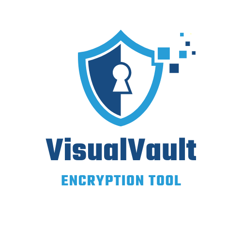
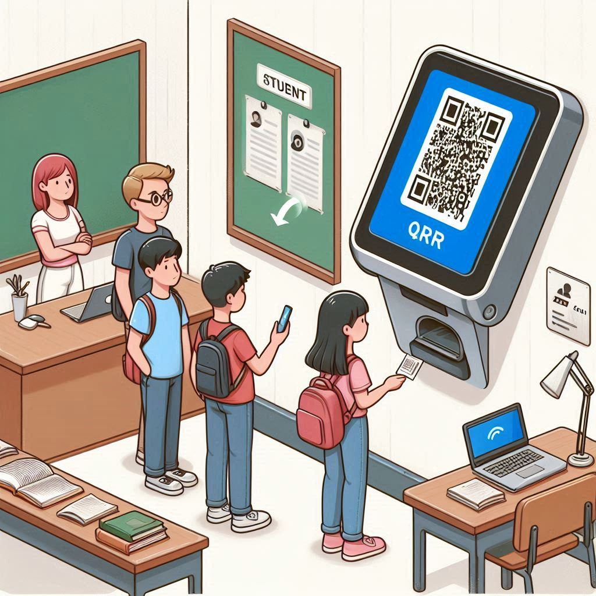
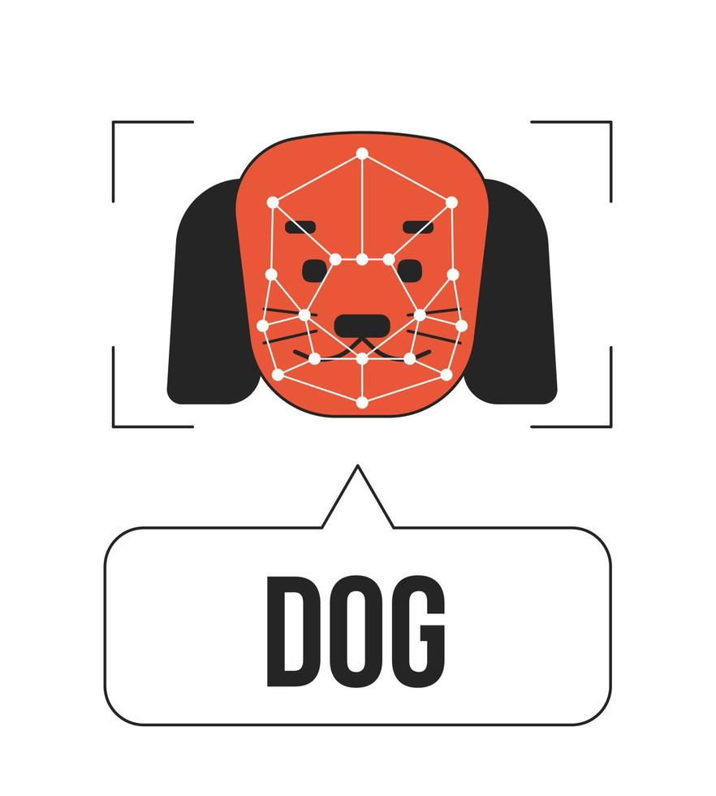

MY WORKS
Project Title: AWS Asset Management System

Project Description:
The AWS Asset Management System is a comprehensive solution for storing and managing digital
assets on the cloud. Developed using Amazon Web Services (AWS), this system leverages S3 Buckets for
reliable storage and is hosted on S3 as a static website, ensuring seamless accessibility and scalability.
Key Features:
S3 Storage Integration: Utilizes Amazon S3 for secure and scalable storage of digital assets,
providing reliable data management and easy retrieval.
Static Website Hosting: The application is hosted on S3, optimized for static content, offering high
availability and low latency.
API Gateway Connectivity: Employs AWS API Gateway to manage and route requests, facilitating smooth
interactions between the user interface and backend storage.
This asset management system is designed for efficient digital asset handling, offering a robust and
scalable solution for individuals and businesses alike.
Project Title: Visual Vault

Project Description:
VisualVault is a secure web application designed to encrypt and decrypt images using the Advanced
Encryption Standard (AES) algorithm. The website, built with HTML, CSS, and JavaScript, provides a
user-friendly interface for protecting your images from unauthorized access.
Key Features:
AES Encryption: Utilizes the AES algorithm to ensure robust and secure encryption of images.
Grayscale Conversion: Initially converts images to grayscale, significantly reducing computational overhead
and enhancing processing efficiency.
User-Friendly Interface: Allows users to easily upload, encrypt, and decrypt images through an intuitive
web-based platform.
Enigma Guard is ideal for individuals and organizations seeking a straightforward and effective solution for
image encryption and decryption.
Project Title:T20 Score Predictor 
Project Description:
The T20 Score Predictor is an advanced machine learning model designed to forecast the final
score of a T20 cricket match based on live match data. Leveraging the power of Random Forest algorithms,
this tool provides real-time predictions by analyzing critical match parameters such as the score from the
last five overs.
Key Features:
Real-Time Data Integration: Continuously ingests live match data to ensure predictions reflect
the most current game conditions.
Random Forest Algorithm: Utilizes this robust machine learning technique to enhance prediction accuracy by
evaluating multiple decision trees.
Dynamic Score Forecasting: Offers real-time projections of the final score based on recent scoring trends
and historical data.
The T20 Score Predictor aims to provide cricket fans, analysts, and teams with valuable insights to
understand potential outcomes and strategies during live matches.
Project Title:Online Learning Application

Project Description:
I developed an online learning application designed to facilitate seamless course registration
and user management. This application provides a user-friendly interface where learners can log in, register
for courses, and access educational content tailored to their interests.
Key Features:
User Authentication: Secure login and registration system to ensure user data privacy and
protection.
Course Registration: Allows users to browse and enroll in a variety of courses according to their interests
and learning goals.
Database Connectivity: Robust backend connectivity to store and manage user information and course
registrations efficiently.
Project Title:QR-Based Attendance System

Project Description:
I contributed to a QR-based attendance system by designing its homepage. This project aims to
streamline attendance tracking using QR codes.
My Role:
Homepage Design: Created a visually appealing and responsive homepage using HTML and CSS.
Technologies Used:
HTML & CSS: Developed the structure and styling of the homepage to ensure a user-friendly
experience.
Project Title:Animal Classification Using Spatial
Pyramid Pooling and Histogram of Oriented

Project Description:
This project aims to accurately classify various types of animals in images by leveraging
advanced computer vision techniques. We employed Spatial Pyramid Pooling (SPP) and Histogram of Oriented
Gradients (HOG) to enhance feature extraction and improve classification accuracy. The preprocessing step
involved removing the background from the images, further boosting the model's performance by focusing on
the animal features.
Features:
Advanced Feature Extraction: Utilizes Spatial Pyramid Pooling (SPP) to capture multi-level,
spatial information, and Histogram of Oriented Gradients (HOG) to capture edge and gradient features,
essential for distinguishing different types of animals.
Background Removal: Implements image preprocessing to remove backgrounds, which reduces noise and focuses
the model on relevant features, significantly improving accuracy.
Robust Classification: Capable of accurately identifying and classifying a wide range of animal types,
making it a versatile tool for wildlife research and conservation efforts.
Efficient Processing: Ensures computational efficiency through optimized feature extraction and
preprocessing techniques, enabling quick and accurate predictions.
This project is ideal for those interested in applying machine learning and computer vision to wildlife
research, conservation, and educational purposes..
Project Title:Accessible Communication Interface for
Deaf-Blind Individuals
Project Description:
This project focuses on creating an inclusive web-based interface to facilitate communication
among deaf-blind individuals. The website leverages cutting-edge technology to bridge communication gaps and
provide an intuitive platform for interaction. Designed with accessibility at its core, this project aims to
empower deaf-blind individuals by offering them a reliable means to communicate effectively.
Features:
Text-to-Braille Conversion: Converts typed text into Braille, allowing users to read messages
using a Braille display or embossing device.
Braille-to-Text Translation: Translates Braille input into text, enabling seamless communication with those
who do not use Braille.
Voice Recognition and Synthesis: Integrates voice recognition for converting spoken words into text and
text-to-speech synthesis, accommodating users with varying levels of vision and hearing loss.
Accessible Interface Design: Adheres to WCAG guidelines, ensuring the platform is fully accessible with
screen readers, keyboard navigation, and high-contrast modes.
Real-Time Communication: Supports real-time messaging, allowing users to interact instantly and efficiently.
Multi-Language Support: Provides support for multiple languages, making the platform accessible to a global
audience.
This project is ideal for organizations, caregivers, and communities looking to support deaf-blind
individuals by providing them with an effective and accessible communication tool.
Status:IN PROGRESS